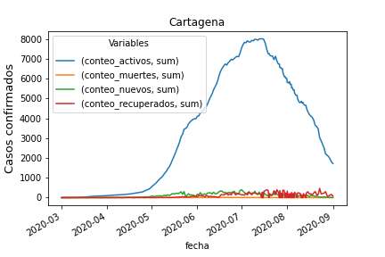
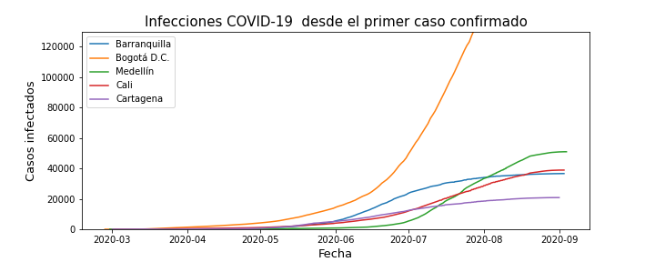
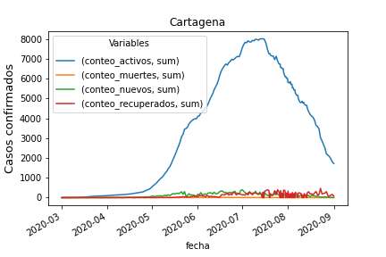
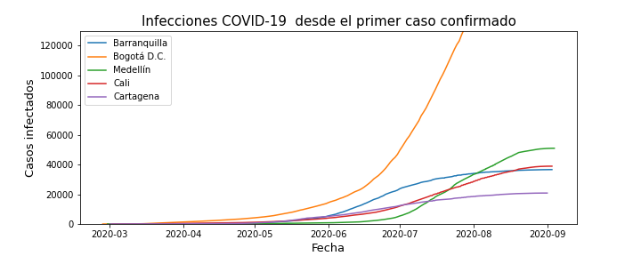
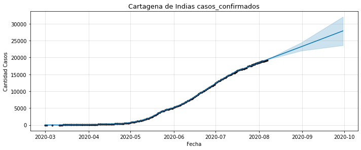
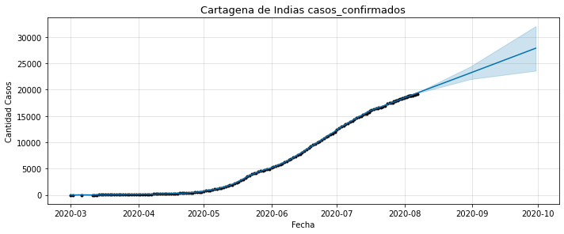

Principales Ciudades
El analisis se realizó con la información de las 5 ciudades principales de Colombia: Medellin, Bogotá D.C., Cartagena de Indias, Barranquilla y Cali. En las siguientes graficas podremos observar la evolución del virus por cada una de estas ciudades, realizando un comparativo por activos, muertes, recuperados y nuevos casos reportados. Además de unos gráficos que marcan las fechas inicio del virus en cada ciudad.
-
 



 
